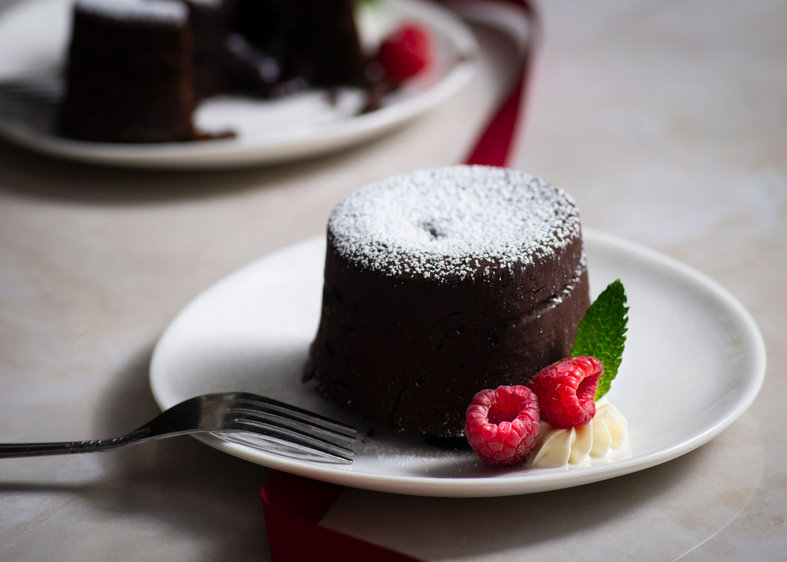

Lava Cake

Description
A tres leches cake also known as a molten chocolate cake is a chocolately treat combining the qualities of cake and souffle.
Link to original recipe.
Ingredients
- 1/2 cup butter, cut into 8 pieces
- 6 and 1/2 squares semisweet chocolate, finely chopped
- 3 eggs
- 1/3 cup white sugar
- 4 tsp. unsweetened cocoa powder
- 2 tbsp. all-purpose flour
- 1 pinch of salt
Steps
-
Preheat oven to 400 Fahrenheit. Grease and flour four 6-ounce ramekins.
-
Place chocolate and butter in the top of a double boiler over simmering water.
Stir frequently, scraping down the sides with a rubber spatula to avoid scorching, until chocolate is melted, about 5 minutes.
-
Combine eggs and sugar in a large bowl; beat with an electric mixer until pale and thick, about 5 minutes.
Mix in melted chocolate, cocoa powder, and flour until combined. Pour batter into the prepared ramekins and place on a baking tray.
-
Bake in the preheated oven until the sides are set but the middle is still jiggly, 10 to 13 minutes.
Let cool for 5 minutes before serving.